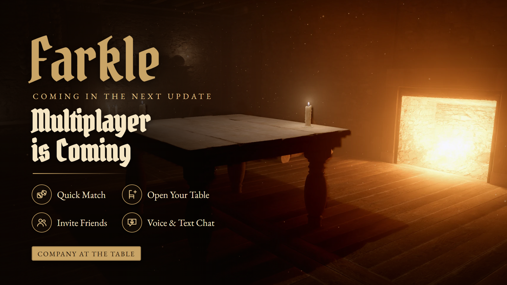
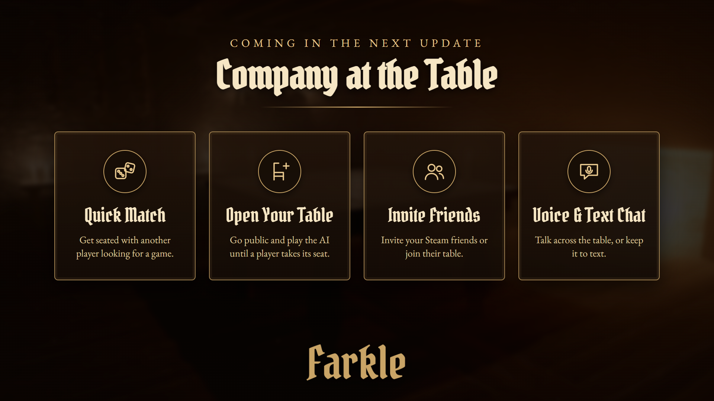

When we shared the road ahead for Farkle: Tavern Dice, one plan got more questions than any other: multiplayer. We're happy to confirm it's coming in the next update.
Dice have always been better with company. Soon you won't just play against the tavern's regulars – you'll be able to sit down with friends, rivals and fellow travellers from all over the world.


Looking for a game? Hit Quick Match and we'll seat you with another player who's looking for one too.
Don't want to wait? Start a game against the AI and make your table public. You play right away, and whenever another player comes looking for a match, they can take the AI's seat mid-game – no lobby, no waiting around. If a player leaves, the AI takes their seat back and the game goes on.
Invite friends straight from your Steam friends list, or join a friend's table from the Steam overlay.
Talk across the table with voice chat, or keep it to text chat. With players you don't know, voice starts switched off, and you can mute anyone at any time.
Every online roll is decided fairly for both players – nobody can load the dice. A turn timer keeps games moving, so nobody holds the table hostage.
Multiplayer is the first step of "Company at the table". After it, we're planning:
No release date has been set yet. Features and scope may change as development continues.
Farkle: Tavern Dice brings the classic push-your-luck dice game into a candle-lit 3D medieval tavern, with physical dice and authentic medieval music by the hearth. Roll, keep your scoring dice, and decide when to bank – or risk one more roll and Farkle away your whole turn. It's built entirely in Ptero, our own custom game engine.
What would you like to see in multiplayer? Let us know in the comments or in the Steam discussions.
Pull up a chair. Someone's about to join you.